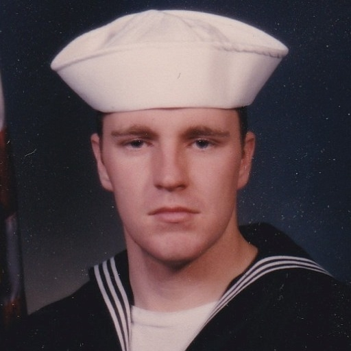
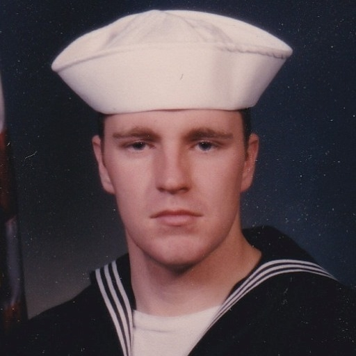

AAAAB3NzaC1yc2EAAAADAQABAAABgQDUcwanVNYmVq0vs3ZmnvnuFJaYltNobRK7hnPlg cy/HBrIpH/j4rMH6jyeaewXtdeaxKW8F7N3hFa6hWXRioJiyLmjFVim8GOn9EoLTl4eyL 5VL5ht7vHjL0N1lPKJEKFrswt1hjFIOSc0cXKFw0Go0jbLyvsIQGgke+QU3LeriVHOR09 pD67UfNzsof4vyXvafkpPJ/Kkhq3i1zeAnY6J8LmaM1vA4Mb3MooL5ZIkMONBhX8SvHpe kK+k23rjHfdBJbYoAytCLumKW/c3NEeyCW8UobWz3vo9IdANlllcAhHAsStc7QzXgoa6p EswW0ImdAI/AdhdFNOaEmwTZJ0O8lm3EOjcHEM8SyIy3afHnTbOawnriTKfPH1CyG70Tv EwJz1USAleyJCfeaJQm9OpZh0QBVRXM6bJjqQZE1O09mE778rzDyQSUxGoEM/yOIh17xf Jt9LyKwlXOTqn4Akg6q1XTYhXZSQiaL/RBFwx5gKSE2IAM/W/J1P8w3NO2xM=
I work as a Senior Software Engineer and also as a Technology Entrepreneur and E-Commerce Consultant
I was born in Scotland, United Kingdom, where my mother was from, but I am a US Citizen
I had a father who was a career US Navy Petty Officer, he met and married my mother while stationed in Scotland with the US Navy
I relocated to the Space Coast of Florida in 1996, from Saint Marys, Georgia, 29 years ago
I like the activities of Scuba Diving, Surfing, Blogging, and being a Unix/Linux Code Geek
I am a Sunni Muslim as of 2022, which will be a lifelong commitment for me
I am a strong believer in the non-violence principles of MLK Jr and Ghandi
I am also an advocate for civil rights and justice for the Palestinian people of the Holy Land (Israel)
My favorite Unix is OpenBSD, and my favorite Linux is SuSE
I recently worked in the NASA Artemis program, developing C++ software for the launch systems of the NASA SLS Rocket
I previously worked in the NASA Space Shuttle Program as Computer Science Staff with United Space Alliance LLC
I have a Bachelor of Science Degree in Information Systems, Computer Science with a minor in Business, from Florida Tech, and also an Associate Degree in Engineering from Georgia Military College
I completed 2 years of Electrical Engineering Study at Georgia Southern University
I am an honorably discharged veteran of the US Navy Reserve. I was in the Navy Seabees. I was called up to active duty after 9/11
Anyone is welcome to contact me, my username on Tilde is mworkman72, feel free to send email also, and also feel free to send me a friend request on Facebook.
Artemis Program SLS Moon and Mars Rocket and Mission

OpenBSD Unix is my favorite Unix. Security is the primary focus of OpenBSD, and it is safe to say OpenBSD is the most secure computer operating system. It is also free to install and use.
OpenBSD was started by Theo de Raadt in the 1990's, after he left the NetBSD project. BSD Unix stands for Berkely Software Distribution and due to it's permissive licensing, now has many incarnations such as NetBSD Unix, FreeBSD Unix, and other versions also.
BSD Unix is also the core of the Apple macOS and iOS operating systems. Steve Jobs and the Apple engineers decided to use BSD Unix to save time and money, and also to prevent "reinventing the wheel".
OpenBSD Unix shell accounts are available free of charge at Tilde.Institute.
I plan to extensively use OpenBSD Unix in the future.
SuSE Linux is my favorite Linux. It was started in the early years of Linux in the 1990's by Code Geeks in Germany, and for many years the extensive shell script library included with SuSE would have all the comments in German. Now in modern times, SuSE Linux has morphed into a billion dollar provider of Enterprise Technology Solutions for government and business.
SuSE Linux first caught my eye in 1999 when I spotted the box set at CompUSA in Melbourne, Florida. I bought it and installed it in a dual boot with Windows 98 on my laptop, and was impressed with how easy it was to use.
During that same year 1999, I started in my first software job in the Space Shuttle Program at Kennedy Space Center. My job sat me down in front of an HP-UX Unix workstation and I was responsible for working with XWindows/Motif GUI Apps written in the C programming language, and also I worked with shell scripts. Everything I learned at that job with Unix, I could apply and use with SuSE Linux in my personal time with my laptop, and vice-versa. It was a good synergy for myself, a young software engineer just getting his start.
One time at my Space Shuttle job, I developed a C program to run on the HP-UX Unix workstations that had like 100 pointers in it! As anyone with C experience knows, C pointers can be very fickle and difficult to work with, I was always worried the application would fail in some spectacular manner, but it did not, it worked good and the Space Shuttle aerospace engineers who used it were very pleased with it.
I still use SuSE Linux today. I have the free version openSuSE Leap installed on my laptop, and also recently used the Enterprise version with a VM I setup in my Microsoft Azure Cloud account.
I plan to extensively use SuSE Linux in the future.
OpenBSD Unix and Kali Linux side by side, good use of older dell laptops


 


2001 Graduate of Florida Tech in Melbourne, Florida